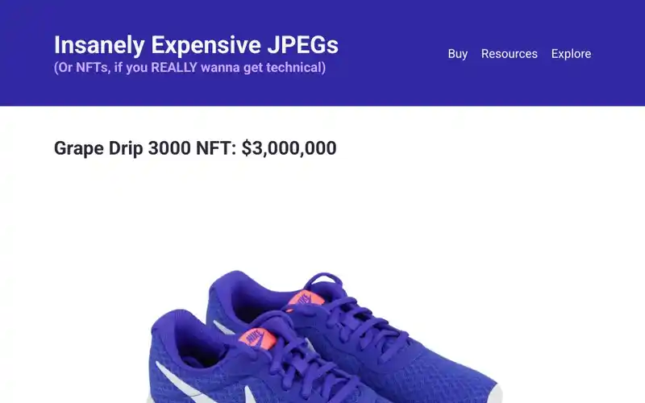
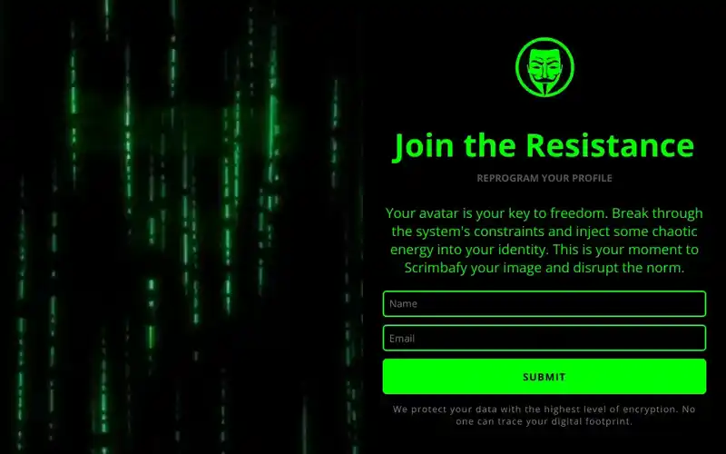

How I got started
I was looking for a more fulfilling career—something creative, practical, and aligned with what I actually enjoy doing. I’ve always liked working with computers, and web development felt like the perfect fit: it’s hands-on, constantly evolving, and gives you the power to build cool things from scratch.
After trying a few scattered resources online, I found Scrimba and it made all the difference. Their interactive lessons helped me stay engaged and actually retain what I was learning. Once I built my first functional project, I knew I was on the right path.
How I stay focused
Learning independently isn't always easy, but I’ve built some habits that keep me on track. I break my study time into focused blocks (hello, Pomodoro timer), keep distractions to a minimum (goodbye, social media—at least for a bit), and set small goals each day to stay motivated.
I also remind myself why I started: to gain the freedom and confidence that come with being a skilled developer. That mindset helps me stay grounded, even on the tough days.

My very first satirical spin on the world of digital ownership. This NFT project pokes fun at the hype, buzzwords, and blurry JPEGs that sold for absurd amounts.

This handy little extension proves that useful tools don't need to be bloated or boring. I built it to simplify the process of saving and managing links—ideal for anyone who has 47 tabs open “for later.

Inspired by The Matrix, this splashpage dares visitors to escape the 9-to-5 simulation. With a hypnotic video background and neon-glow aesthetic, it's more than a landing page—it's a digital red pill.